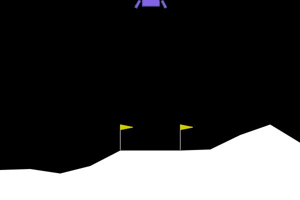
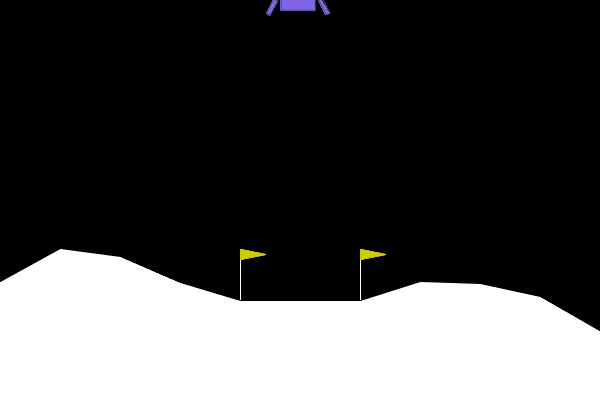
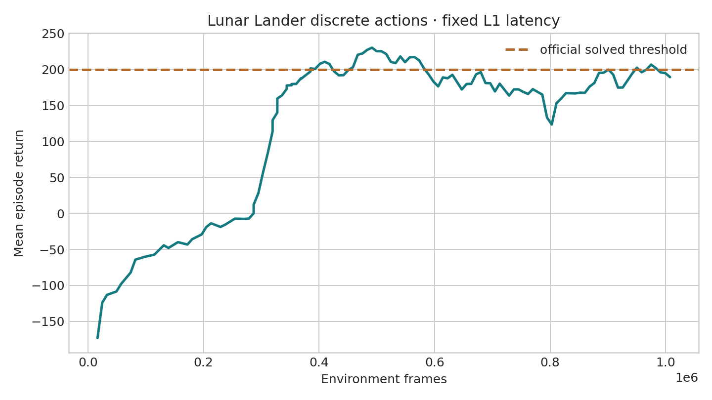
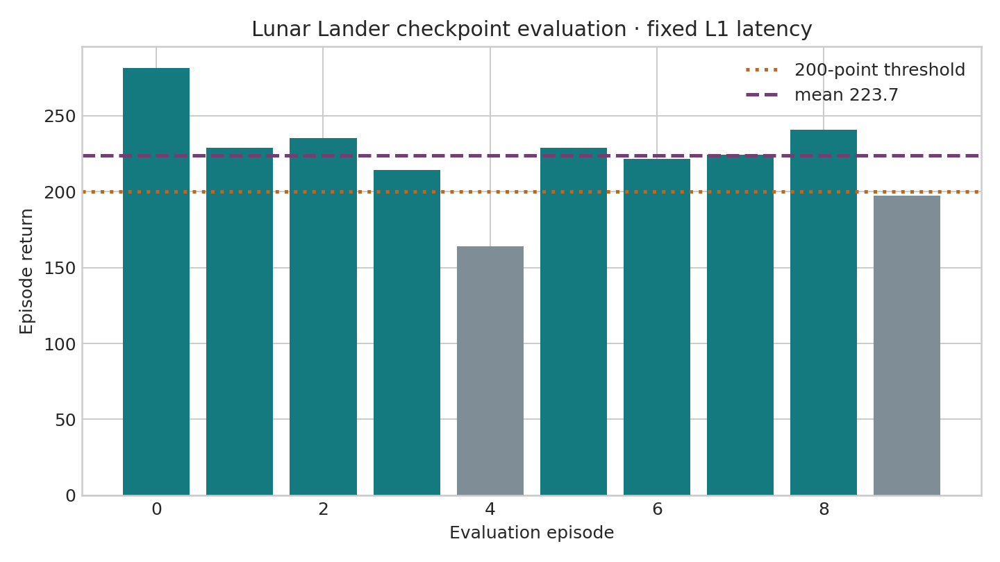
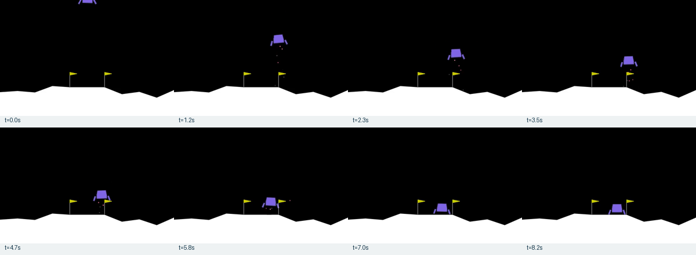

Native discrete path
LunarLander-v2 already exposes Discrete(4); no task wrapper or action discretization was added.
latency-sensitive-bench / verified release example
A transparent record of how the agent pinned the installed Box2D task, preserved its four native actions, froze one raw frame of latency, trained APPO, and evaluated the final checkpoint through latency-bench.
01 · Outcome
LunarLander-v2 already exposes Discrete(4); no task wrapper or action discretization was added.
Fixed-L1 APPO completed 1,015,808 environment frames and produced latest and best checkpoints.
The final checkpoint completed ten L1 episodes with action, step, latency, metric, and video records.
No rollout dataset, conversion, OpenVLA SFT, or StarVLA evaluation was requested or executed.
02 · Runtime reconnaissance
box2d-py 2.3.5.LunarLander-v2; the current documentation's v3 is unavailable in this runtime.Discrete(4).float32 vector.(400,600,3) uint8.L1=20 ms.The exact runtime values are preserved in the API probe. The official page describes the same four action meanings, but its current v3 bounds and fixes must not be silently applied to this pinned v2 experiment.
03 · Generated implementation
scripts/scaffold_gymnasium_lunar_lander.pyProbes the pinned Box2D API and emits the complete direct-task contract.
configs/examples/gymnasium/lunar_lander/Contains grouped small-model train/eval, latency-bench eval, and unexecuted StarVLA eval configs.
tests/envs/tasks/test_gymnasium_lunar_lander.pyChecks native action semantics, no-op queue behavior, timing, probe output, and four-config equality.
GymnasiumEnvAdapterThe existing generic adapter constructs LunarLander-v2 directly. No legacy factory branch was added.
04 · Immutable task contract
observation_stride = 50 / 50 = 1 · latency_raw_frames = ceil(20 × 50 / 1000) = 1
env:
name: gymnasium
task_name: lunar_lander_discrete
env_id: LunarLander-v2
registration_imports: []
make_kwargs:
render_mode: rgb_array
continuous: false
gravity: -10.0
enable_wind: false
wind_power: 15.0
turbulence_power: 1.5
env_fps: 50
obs_fps: 50
frame_stack: 1
noop_action: do_nothing
action_map:
do_nothing: 0
fire_left_orientation_engine: 1
fire_main_engine: 2
fire_right_orientation_engine: 3
action_order:
- do_nothing
- fire_left_orientation_engine
- fire_main_engine
- fire_right_orientation_engine
base_prompt: >-
Land the spacecraft safely between the flags. Choose exactly one action from:
do_nothing, fire_left_orientation_engine, fire_main_engine,
fire_right_orientation_engine.All four resolved configs produced identical env mappings. The scaffold-emitted copy is available as env_block.yaml.
05 · Contract propagation
env.name=gymnasium selects the separate generic adapter and calls gym.make() with the frozen kwargs.
The generic catalog exposes policy IDs 0–3 and stores task identity, values, no-op, prompt, and clock in the checkpoint.
Action 0 remains active until the first issued engine command becomes ready one raw tick later.
The checkpoint ID is decoded through the same ordered catalog and passed unchanged to the native environment.
| Field | Training | Evaluation |
|---|---|---|
env_id, kwargs | Reconstruct pinned v2 dynamics | Build the same no-wind task |
| Action labels/values | Expose Discrete(4) | Decode IDs without remapping |
noop_action_id=0 | Initialize delayed queue | Apply do-nothing before first result |
| 50 Hz clock | One decision per physics tick | Convert 20 ms to L1 exactly |
| Prompt/frame stack | Persist for later handoff | Unused by the small policy |
06 · Verification gates
Lunar Lander plus generic adapter, Sample Factory, and StarVLA contract tests passed.
Seed 123 and eight actions matched observations, rewards, termination, and truncation exactly.
Issued main engine ID 2 first applied no-op ID 0; ID 2 became active on the next tick.
Observation remained (8,) float32; render remained (400,600,3) uint8.
07 · Command ledger
vast-4090-latency: Conda latency, Python 3.10.20, Torch 2.11.0+cu128, RTX 4090, Gymnasium 0.29.1, Box2D 2.3.5, Sample Factory 2.1.1.
conda activate latency
uv pip install swig
uv pip install --no-build-isolation box2d-py==2.3.5
uv pip install "gymnasium[box2d]==0.29.1"
python -m pip checkThe initial one-command extra install failed because isolated box2d-py could not see SWIG. Installing SWIG first resolved the task dependency without changing the repository base dependencies.
SDL_VIDEODRIVER=dummy pytest -q \
tests/envs/tasks/test_gymnasium_lunar_lander.py \
tests/envs/adapters/test_gymnasium_env_adapter.py \
tests/training/test_gymnasium_sf.py \
tests/policies/test_generic_gymnasium_starvla_policy.py
SDL_VIDEODRIVER=dummy python scripts/scaffold_gymnasium_lunar_lander.py \
--report-path /workspace/lunar-lander-adapt/api_probe.json \
--env-yaml-path /workspace/lunar-lander-adapt/env_block.yamlpython artifacts/lunar_lander/repro_scripts/zero_latency_parity.py
python artifacts/lunar_lander/repro_scripts/l1_scheduler_trace.pyWANDB_MODE=disabled SDL_VIDEODRIVER=dummy python -m training.train \
--config configs/examples/gymnasium/lunar_lander/small_model_train.yamlCompleted 1,015,808 frames at 1,746.3 FPS. Latest checkpoint: outputs/examples/gymnasium_lunar_lander/checkpoints/gymnasium_lunar_lander_discrete_fixed_l1/checkpoint_p0/checkpoint_000001984_1015808.pth.
python -m latency_bench.run \
--config configs/examples/gymnasium/lunar_lander/small_model_eval.yaml \
--checkpoint-path outputs/examples/gymnasium_lunar_lander/checkpoints/\
gymnasium_lunar_lander_discrete_fixed_l1/checkpoint_p0/\
checkpoint_000001984_1015808.pth \
--episode-start 0 --episode-count 10Mean return 223.698, standard deviation 28.521, mean length 451.8, scheduled latency 20 ms.
08 · Evidence ledger





Full checkpoints and raw JSONL records remain in ignored outputs/examples/gymnasium_lunar_lander/; curated evidence only is duplicated here.
09 · Optional continuation
starvla_eval.yaml is a contract template only.10 · Isolation and limitations
Discrete(4) fast path.pyproject.toml.v2; current v3 fixes and wider observation bounds are not silently mixed in.See the normative guide and Gymnasium examples index.